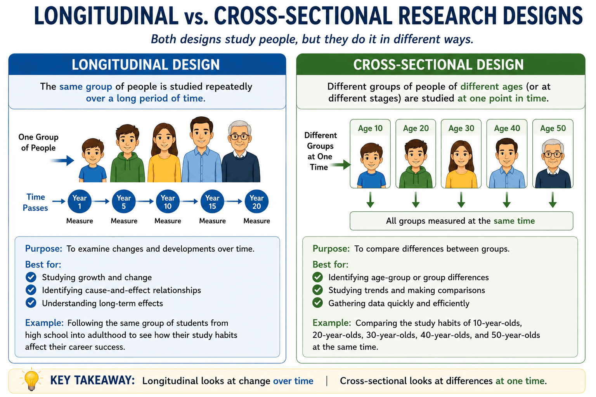

The Big Picture: Growing Up and Changing Minds
Welcome to Unit 3! As with the other content units, this unit represents a 15-25% weighting of the AP Exam. Development and learning are fundamentally about growth and change. In Units 1 and 2, we looked at the biology of the brain and how it processes information. Now, we are going to look at how biological, cognitive, and environmental factors come together to influence growth throughout the entire lifespan. While the most noticeable changes happen from birth to age 18, people continue to grow and develop throughout their whole lives.
1.The Three Enduring Themes of Development
Developmental psychology is concerned with both the chronological order of development and the thematic issues that span across a lifetime. As psychologists study how humans grow, they continually circle back to three primary thematic issues:
- Nature vs. Nurture
- How much of our behavior is driven by our genetic inheritance and biology (nature)? And how much is driven by our environment, experiences, culture, and learning (nurture)? It is almost always a complex interaction of both!
- Continuous vs. Discontinuous Development
- Does development happen gradually and smoothly over time with small incremental changes (continuous)? Or do we grow in distinct, abrupt stages with clear shifts between phases of growth (discontinuous)?
- Stability vs. Change
- Do our early personality traits persist through life, or do we become entirely different people as we age? Some traits, like general temperament, remain relatively stable throughout life. Other aspects, such as memory retention, sensory acuity, and social attitudes, fluctuate heavily with age.
2.How We Study Development (The Methods)
To figure out how humans change over time, developmental psychologists rely heavily on two specific research design methods to control for variables like maturation:
- Cross-Sectional Studies
- This method compares individuals of different ages at one single point in time. For example, giving a memory test to a group of 20-year-olds, a group of 40-year-olds, and a group of 60-year-olds on the same day. It is fast, cheap, and gives immediate results.
- Longitudinal Studies
- This method follows the same individuals over a long period of time to observe changes. For example, testing a group's memory when they are 20, waiting two decades to test them again at 40, and waiting again to test them at 60. This provides incredibly accurate developmental data, but it is highly expensive, takes years to complete, and runs the risk of participants dropping out.

3.Key Terms in This Topic
4.Practice This Topic
Test yourself on exactly what you just read. The numbers on each button show how much material is waiting for you.
The same self-check questions that close your guided notes. Find out whether the themes and research designs stuck.
Start Quick Check →Flip through the key terms from this topic, including continuous and discontinuous development.
Open the deck →AP-style multiple choice on the themes of development and on cross-sectional versus longitudinal designs, with an explanation after every answer.
Take the quiz →